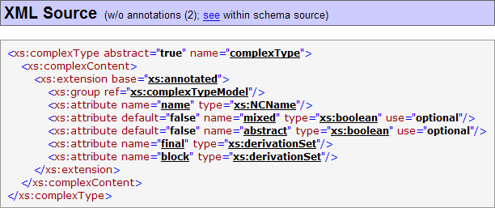
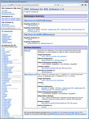
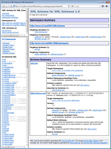

The general summary information about the schema.
For more details, see XML Schemas | Schema Profile.
This section displays the full annotation
text obtained from all <xs:documentation> elements found by the following path:
xs:schema/xs:annotation/xs:documentation
Multiple <xs:documentation> elements produce separate sections of the annotation text.
See also: Annotations
The summary tables of all global components and local elements defined in the given XML schema.
For more details, see Components | Component Summaries.
The full XML source of the schema.
For more details, see XML Source | Reproducing full XML schema source.
An example of Schema Overview (click on the screenshot to see a real HTML):
Generated By Template:
Schema Overview blocks are generated by schema-overview.tpl template.
Controlled By Parameters:
See Also:
DocFlex/XML | XSDDoc | Documentation Organization | Main Blocks | Schema Overview.
A schema summary may appear in the Overview Summary block (where it enumerates all documented XML schemas) and in the Namespace Summary blocks (where it shows all XML schemas that target the particular namespace).
Each schema summary is organazied as a table, in which every row displays some information about a particular XML schema file. That information may consist of two subsections:
For more details, see DocFlex/XML | XSDDoc | Documentation Organization | Main Blocks | Namespace Overview.
Using “Show | Namespace Prefixes” parameter, you can switch on/off adding namespace prefixes to the XML names shown in the documentation.
You may want to disable the prefixes when:
For more details, see DocFlex/XML | XSDDoc | Documentation Organization | Main Blocks | XML Namespace Bindings.
For more details, see DocFlex/XML | XSDDoc | Documentation Organization | Main Blocks | Component Documentation.
When the full XML schema source is reproduced in the documentation, it plays a central role in it and is heavily cross-linked with other documentation parts (as well as within itself):
Generated By Template:
The full XML schema source is reproduced by schema-overview.tpl | “XML Source” stock-section, which calls from itself nodeSource.tpl to generate the most part.
Controlled By Parameters:
Details | Schema Overview | XML Source
xs:anyURI
attributes.
See Examples | HTML Documentation.
<xs:annotation>
elements from the specific fragments of the reproduced XML source
(this is controlled by “... | XML Source | Remove Annotations”
template parameters group).
You may want to hide
<xs:annotation>
elements particularly when you are using XHTML
to format your descriptions. In that case, the reproduced
XHTML markup may occupy so much space, that it will overwhelm anything else.
(In addition, there is no much need to show it within XML source,
because all the annotation will be already present as a formatted text in the
“Annotation” section
of the component documentation).
For example, like on this screenshot:

<xs:annotation>
elements, you can add descriptions both to your XML schema as a whole and, separately, to any components defined in it.
Note that your description text must be enclosed in
<xs:documentation>
element nested in the <xs:annotation> element.
<xs:annotation>
elements can be inserted in almost any other XML Schema elements.
However, currently, XSDDoc
templates process only annotations specified in the following locations:
Here, the
<xs:annotation>
elements may appear as one or multiple children of the
<xs:schema>
element.
When such an <xs:annotation> element is processed, the annotation text will get into the
Annotation
section of the
Schema Overview.
Multiple <xs:annotation> elements will produce separate “Annotation” sub-sections.
For example, see “XMLSchema.xsd” schema overview.
Here, the
<xs:annotation>
element may be a child of one of the XML Schema elements:
<xs:annotation> element will be processed into an
Annotation section
of the Component Documentation.
Here, the <xs:annotation>
element may be a child of one of the locally used XML Schema elements:
<xs:complexType>
(type xs:localComplexType)
<xs:simpleType>
(type xs:localSimpleType)
<xs:annotation>
processed into the “Annotation” section of the Anonymous Type Detail.
Here, the <xs:annotation>
is a child of one of the local XML Schema elements:
<xs:element>
(type xs:localElement)<xs:element>
(type xs:narrowMaxMin)
Here, the <xs:annotation>
is a child of the locally used XML Schema element:
Here, the <xs:annotation>
may be a child of one of the XML Schema facet elements:
For details, see FAQ | How to format my comments using XHTML?
The Element Content Model, which represents all possible combinations of children of an element, is shown within XML Representation Summary of certain elements (see 'Content' field on the picture above), complex types and element groups.
Element Content Models are represented using Kleene operators (the same as used in DTD) extended with two more operators to cover all situations allowed by W3C XML Schemas. The following table shows all operators used in Element Content Model representations:
| Operator | Description |
|---|---|
| , | sequence |
| | | choice |
| () | grouping |
| ? | 0 or 1 times |
| + | 1 or more times |
| * | 0 or more times |
| Extended operators | |
| × |
The idea of this operator can be expressed by the formula:
a × b = ((a, b) | (b, a)) This operator is used in two situations:
|
| [n1, n2] |
A general cardinality operator
(n1 can be 0 or any number; n2 is any number or *).
This operator is used in those rare situations when Kleene cardinality operators (?, +, *) are not enough. For example: A+ is the same as A[1,*] |
In the case of a derivation by union, the full supertype tree is too complicated, so it is reduced to a formula that shows only the ancestor types used directly in the declaration of the given type:
Now, within the same XML document, you may find several different XML elements that although share the same name, actually represent more or less different things and, therefore, may have different attributes and content. It is clear that such equally named but essentially different local elements must be documented separately.
On the other hand, in many cases local elements are declared very simply:
<xs:element name="elementName" type="typeName"/>
In such a declaration, an element is totally defined by its type, which is a global one.
An XML schema may contain many such simple declarations, where {elementName, typeName} pairs are repeating.
Therefore, the {elementName, typeName} pair itself may be considered now as an actual "global" element
that could be documented as a single entity.
The purpose of two types of the documentation is that some elements may be important to show in the navigation lists, whereas other elements (particularly those with predefined simple content that essentially play the role of attributes) are better to be documented locally where they are defined/used. Exposing such insignificant elements in the navigation lists and summaries (along with the global elements or those with complex content) may blow out and overwhelm such lists and make them difficult to navigate.
As an example, here are two documentations generated for the same little XML schema (from “Sales Report” sample). On the left is the documentation, in which only global elements and local elements with complex type are documented separately (globally). On the right, all elements are documented separately. Click on the screenshots to view the docs:
That documentation appears in the Content Element Detail section of the Component Documentation generated for the element's parent component. It may contain more details about the element declaration itself, but will provide less information about how the element is used elsewhere.
What exactly is included in this section for each element is controlled by the parameter group “Details | Component Documentation | Content Element Detail”.
In the case of framed HTML documentation, such an element will also appear in the component lists shown in the documentation List Frame (on the left).
Moreover, unlike the section describing that element in the Content Element Detail of its parent component, the detailed Element Documentation may include a lot more information about how the element interacts with other XML schema components (e.g. List of Containing Elements, Usage/Definition Locations etc.)
Which local elements get documented globally is controlled by the parameter group “Generate Details | Elements | Local Elements”. What is included in that documentation is controlled by the parameters in “Details | Component Documentation” group.
{ namespace : elementName : typeName }
In that case, their definitions typically look like the following:
<xs:element name="elementName" type="typeName"/>
So, there is basically nothing (or very little) special to say about every particular such a definition.
On the other hand, the same name/type combination for a schema element is typically associated with the same notion from the real world. When you try to understand a particular XML schema, tracking something associated with different local elements scattered across the whole schema may be difficult. Having a single documentation for those elements may quickly reveal a lot more things.
This XML schema documentation generator supports such a possibility.
When the parameter “Generate Details | Elements | Local Elements | Unify By Type” is selected, all local elements that share the same {namespace : elementName : typeName} will be documented on the same global documentation page as a single entity -- unified local element.
All actual element components unified by type across the documentation will be hyperlinked to that page and all of them will be represented by a single item in various navigation lists.
If some of the definitions of the unified local element do vary
(e.g. they may have different annotations or a few other settings, like default attribute)
those differences will be also documented on the same unified global documentation page.
For many XML schemas, the unification of local elements by type may greatly reduce the overall number of documented elements, thereby making the documentation a lot clearer. In some special cases, the XML schema documentation generated without it would be even difficult to understand and use. All you would see would be lots of repeating element names with a little clue what they actually mean (especially given that some of them may represent essentially the same things, whereas others quite different ones.)
Example:
As an example of how the unification local elements by type works, here are two XML schema documentations generated from the same XML schema: http://www.w3.org/2001/XMLSchema.xsd.On the left is the documentation generated with the unifying local elements by type enabled. On the right, all local elements were documented straight, without any unification. Click on the screenshots to see the docs:
All XSDDoc parameters were the same, except one: “Generate Details | Elements | Local Elements | Unify By Type”, which was checked (left) and unchecked (right).


You may quickly see the difference when you look at the navigation list (bottom-right frame) of both documentations. Browse both docs to see more.
We believe that the first documentation is a lot clearer than the second one!
But when such equally named local elements need to be presented in a single navigation/reference list or summary, it may be impossible to tell them apart (at least until clicking the links).
Fortunately, that problem can be solved by extending each repeating local element name with a little text that would make the element unique across the documentation.
Such extensions of local element names are generated according to the following rules:
name (in full_parent_name)
where full_parent_name is a normal qualified name for a global element
or the qualified name with the extension for a local element.
Otherwise, the element name is extended differently (as described below).
type attribute
name (type type_name)
or, when the name appears within the extension of other local element's name:
name : type_name
Here, the type_name is the qualified name of a global type
specified in the type attribute.
The conditions above guarantee that such a whole name (i.e. the element qualified name + extension) will be unique for every separately documented element entity (that is, the hyperlinks from equal names will always lead to the same documentation).
Indeed, any local element can be defined only in three types of locations:
|
So, the name extension is produced from the definition location, as follows:
name (defined in type_name complexType)
or
name (defined in group_name group)
where type_name or group_name is the qualified name
of the global complex type or element group, in which the element is defined.
Examples:
xs:choice (in xs:group)'xs:choice' (whose name is being extended) may be included
in only one other element 'xs:group', which is the global one.
xs:group (type xs:groupRef)'xs:group' has a global type 'xs:groupRef'.
This local element component is documented globally, possibly along with other equally named
local elements unified by the same type.
xs:attribute (defined in xs:attrDecls group)'xs:attribute' may be included
in several other elements (documented differently) or in none at all.
However, it is defined in only one location -- in 'xs:attrDecls' group.
configuration (in plugin in plugins in reporting)'configuration' (whose name is being extended) may be included
in only one other element 'plugin', which itself is also a local one included
only in 'plugins' element and so on.
configuration (in plugin : Plugin)'configuration' may be included in only one other element 'plugin',
which by itself can be one or several local element components unified by the same type 'Plugin'.
In those cases, you can disable the generation of name extensions using “Show | Local Element Extension” parameter, either for all local elements altogether or for only those whose original names are unique.